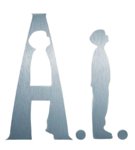

2001 | 2H 24M | SF, 판타지 | 미국
자원이 고갈되어 가는 지구, 남은 인류들은 24시간 극심한 감시에 시달리고
감정이 없는 인조인간들의 인공지능에 의지하며 살아간다. 인간을
사랑하도록 프로그래밍된 데이비드는 모니카를 엄마로 여기며
점차 인간사회에 적응해간다. 하지만 아들 역할도 잠시, 모니카의 진짜
아들 마틴이 퇴원해 가족의 품으로 돌아오자 데이비드는 슈퍼토이
테디 베어와 함께 숲 속에 버려지는데...
감독 | 스티븐 스필버그
출연진ㅣ 할리 조엘 오스먼트(데이빗), 프란시스 오코너(모니카 스윈튼), 윌리엄 허트(허비 교수)
Blue fairy. Please, please make me a real boy...
파란 요정님, 제발 제가 인간이 되게 해주세요...
professor: If a robot could genuinely love a person, what responsibility does that person hold toward that Mecha in return?
로봇이 인간을 순수하게 사랑할 수 있다면, 그 보답으로 인간이 어떤 책임을 져야하는 건 아닌가요?Habi : But in the beginning, didn't Got create Adam to love him?
태초에 하나님이 아담을 사랑하려고 창조하지 않았나요?
좋아하는 코멘트
사랑하게 만들어놓고, 왜 받아주지 않나요.
- 왓챠피디아 '박종은'사랑이라는 감정이 인간만의 가장 보편적이고 아름다운 감정이라는 점은 이미 익숙하지만,
- 왓챠피디아 '에리코'그만큼 보편적이기에 그것을 설계하고 조작할 수도 있겠다는 인간의 오만함에도 무방비해진다.
영화는 그 오만함의 피해자가 된 로봇의 이야기를 보여주지만, 2천년을 기다린 후에야 사랑을 얻은
데이빗의 경우에는 오히려 그가 로봇이기에 가능했던 축복이었다.
즉, 로봇이든 인간이든 그 감정의 깊이만 중요할 뿐 몸의 형식은 중요하지 않다.